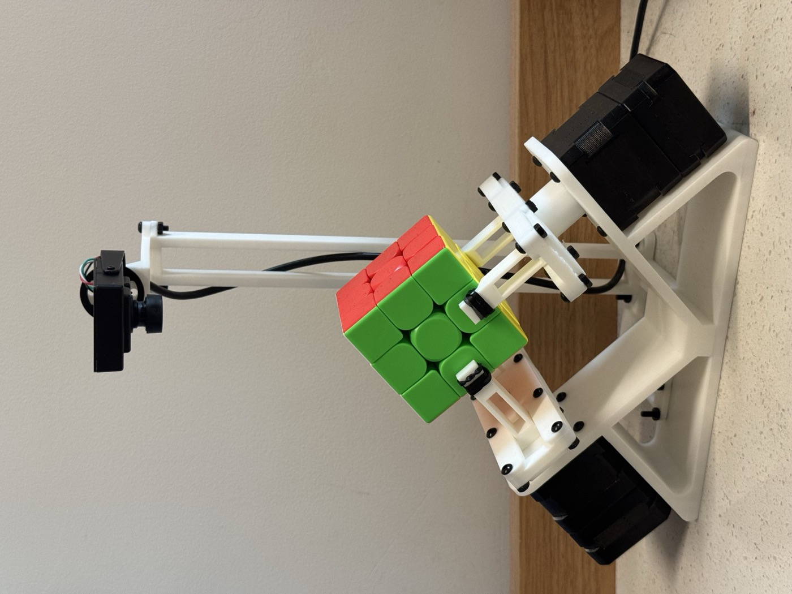
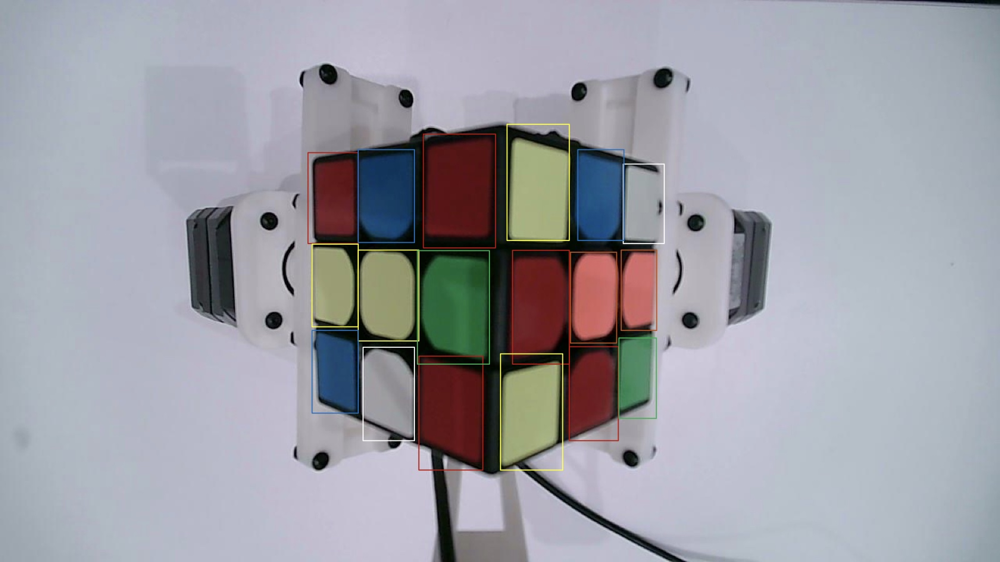
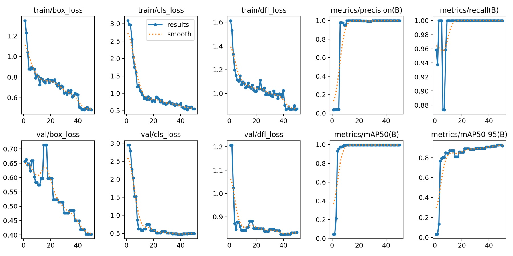
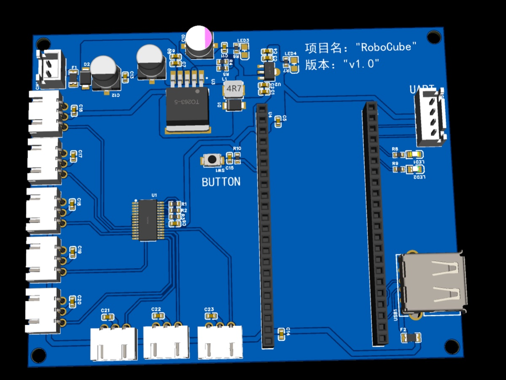

A camera, Kociemba's two-phase solver, a MuJoCo model of the rig, and two stepper-driven grippers that can only reach two of the cube's six faces.
Planning runs on a host computer; the rig only executes clamp, release and rotate commands.
one JSON line / packet
waits for DONE

With the grippers fixed to the frame, only two of the six layers are within reach at any time. The controller keeps a 3×3 integer matrix from the machine frame to the cube's own frame and updates it after every roll. For each requested move it searches breadth-first over sequences of single-gripper rolls for the shortest one that brings the target layer into a gripper's slot, picking whichever arm needs fewer rolls. Half turns run as two quarter turns, because the wrist only travels ±90°.
R'.The interface between the planner and the rig is deliberately small: an ordered list of four kinds of command. The simulation never streams poses or trajectories; whatever the controller decides is written down as these packets, and the same list drives the real motors.
| Op | Fields | What the rig does |
|---|---|---|
| CLAMP | side | Close one gripper. |
| RELEASE | side | Open one gripper. Refused unless the other gripper is closed, so the cube is never dropped. |
| DUAL_HOLD | none | Both grippers closed; the safe resting state between moves. |
| ROTATE | side, angle | Drive one wrist to −90°, 0° or +90°. With the other gripper open this rolls the cube; with both closed it turns a layer. |
On the wire, the host sends each packet as one line of JSON carrying both grippers' target state, and blocks until the Arduino answers DONE:
{"L":{"state":1,"angle":1.5708,"action":"ROTATE"},
"R":{"state":0,"angle":0.0,"action":"HOLD"},
"t_ms":400} // → "DONE"
Two additions came from running the real rig. Stepper clamps slowly lose grip under load, so after each return to a dual hold the bridge sends a short RECLAMP that presses both jaws inward again. And after a release leaves the cube in one gripper, it waits 300 ms while the holding side keeps creeping inward before the next rotation starts.


The camera's auto-exposure and auto-white-balance are switched off at start-up, so colours don't shift when the white arms move through the frame. The scan rolls the cube through five poses, each showing two faces; the ten face views are sorted by position into rows and columns and fused into the 6×3×3 state the solver needs.
The model is built from the team's CAD assembly. The arms are reduced to the same four motors the real rig has: a wrist and a clamp on each side.
This is a recording of the MuJoCo model running the robot's controller, played back in your browser with the real CAD meshes. The packet list on the right is exactly what would be sent to the Arduino at that moment. Drag to orbit; hold ctrl or ⌘ and scroll to zoom.
Playback runs at 60 controller steps per second at 1×; it shows the order and geometry of motions, not the real rig's timing. Each "Scan and solve" recording starts from a random 20-move scramble, runs the same five-pose scan as the robot, reads the state, and solves it.
R U R' U', the first thing we ran end to end. Four face turns become 68 packets: each turn needs one or two rolls first.1000 random 20-move scrambles, each scanned, solved and executed by the controller.
Face turns in the Kociemba solution
Half turns run as two quarter turns on the rig
Extra motions the fixed grippers need
Primitive packets plus the bridge's re-clamps and holds
Recorded on the integrated rig. The controller and packet stream are the same ones shown above.
Zhuoyang also designed a two-layer servo-control board: a PCA9685 16-channel PWM driver on I²C, an XL4015 buck stage for a 5 V servo rail, an AMS1117 3.3 V logic rail, a fused and diode-protected input, and separate servo and logic grounds. Both rails and all 16 PWM channels were verified on the bench.
The final rig switched to stepper motors driven from an Arduino Nano Every, so this board is not part of the system shown above.

@misc{huang2026cubesolver,
title = {Dual-Arm Robotic Rubik's Cube Solver},
author = {Huang, Qixuan and Xu, Yiming and Wang, Rong and Shen, Zhuoyang},
year = {2026},
note = {ECE 445 Senior Design Project, University of Illinois Urbana-Champaign}
}